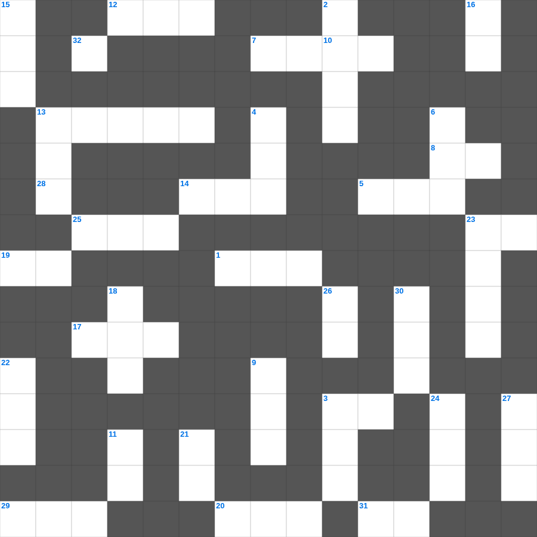

성경 상식: 성경 전권 이름
📌 서비스 정의
십자가로세로는 교회 주보와 주일학교에서 사용할 수 있는 성경 기반 가로세로 퍼즐 서비스입니다. 성경 인물, 사건, 핵심 구절을 바탕으로 제작되었습니다. 온라인 풀이 및 인쇄 기능을 제공합니다.
오늘은 성경 상식의 주요 내용을 담은 성경 상식 무료 성경퀴즈를 준비했습니다. 총 35개의 힌트가 있으며, 주일학교 교재나 성경공부 자료로 활용하기 좋습니다. 무료로 즐기는 성경 상식 가로세로 퍼즐을 지금 바로 풀어보세요!

📝 가로 힌트
1. 이사악의 아내
3. 사랑받는 제자로 불린 사람
5. 죄를 속하기 위해 드리는 제사
7. 예수님이 십자가에 못 박히신 곳
8. 여호와는 나의 이것이시니 내게 부족함이 없으리로다
10. 바울의 고향
12. 메시아의 탄생을 예언한 평화의 선지자
13. 아브라함이 떠난 고향
14. 삼손의 힘의 비밀을 알아낸 여인
17. 이스라엘이 외칠 때 무너진 성
19. 안식일을 기억하여 이것하게 지키라
20. 평안히 눕고 이것하기도 하리니
23. 물고기 배 속에서 회개한 선지자
25. 노아의 방주에 비가 내린 일수
28. 겨자씨 한 알 만한 믿음이 있으면 이 이것을 옮기리라
29. 사자 굴에서도 살아남은 사람
31. 시편 다음 책
32. 모세가 반석을 치자 나온 것
📝 세로 힌트
2. 빌립이 전도한 제자
3. 나아만 장군이 문둥병을 고친 강
4. 이스라엘의 유일한 여성 사사
6. 하나님과 화목하기 위해 드리는 제사
9. 바울이 2년 동안 가르쳤던 서원
11. 나의 이것을 너희에게 주노라
13. 엘리야가 바알 선지자와 대결한 산
15. 이스라엘이 광야에서 보낸 년수
16. 오직 의인은 이것으로 말미암아 살리라
18. 바울이 로마로 가기 전 마지막으로 머문 섬
21. 제물을 통째로 태워 드리는 제사
22. 어린아이가 가져온 보리떡의 개수
23. 마태 마가 누가 다음 복음서
24. 베드로와 안드레의 고향
26. 믿음은 바라는 것들의 이것
27. 함께 가져온 물고기의 마리 수
30. 안드레의 형제
🧑🏫 교회 교육 자료 활용
이 퍼즐은 주일학교 교재 추천 자료로 활용할 수 있고, 주일학교 주보에 넣기 좋은 분량으로 구성되어 있습니다. 수업용 주일학교 교안에 활동지로 붙이거나, 예배 후 복습용 주일학교 공과교재로 바로 사용할 수 있습니다.
🏷️ 키워드
성경 상식 무료 성경퀴즈, 성경 상식, 십자가로세로, 성경퀴즈, 말씀퀴즈, 가로세로퍼즐, 주일학교 교재 추천, 주일학교 주보, 주일학교 교안, 주일학교 공과교재